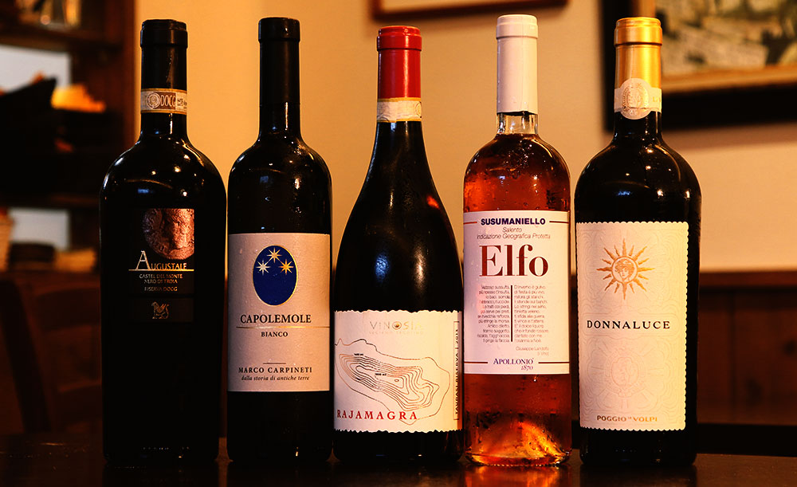

6「ラ・ポルケッテリア」（要予約）
名古屋市千種区今池
※東山線・桜通線-今池駅から徒歩2分



Googleマップの評価「星４.３」
ワインソムリエがアドバイスしてくれる、本場イタリアの味が食べられる最高のイタリアン
イタリアで修業したシェフが作る本格イタリアンのお店。
ソムリエの資格を持った店員がおり、様々なワインを合わせる料理を加味した上でアドバイスを受けられる。私はワインの銘柄や産地についての知識が無いためソムリエにおまかせでワインを頼んだが、市販のワインと比べて豊潤で深みのある味わいと香りに意識がトリップしてしまった。値段はそれなりにはかかるが一級品のレベルの料理とワインを考慮すれば妥当かむしろお得と言えよう。
店内のテーブルはそこまで大きいものではないので２～４人の少人数向けで、来店する客も男女のカップルや夫婦が多い印象だ。人気店のため、予約をしておかないと１９～２０時辺りまで満席になるので注意しておこう。
また、メニューの料理名はほぼ全て本場の名称なため表記から料理を判別するのは難しい。苦手な食材が入っていなければまずハズレは無いと言い切れるので、来店の際に悩んだらどんな料理かを確認してみて色々挑戦して食べ比べることをおすすめする。
「店舗所在地」
| 住所 | 〒464-0850 愛知県名古屋市千種区今池５丁目９−５ |
|---|---|
| TEL | 052-717-1959 |
| URL | https://www.bar-e-passione.com/ |